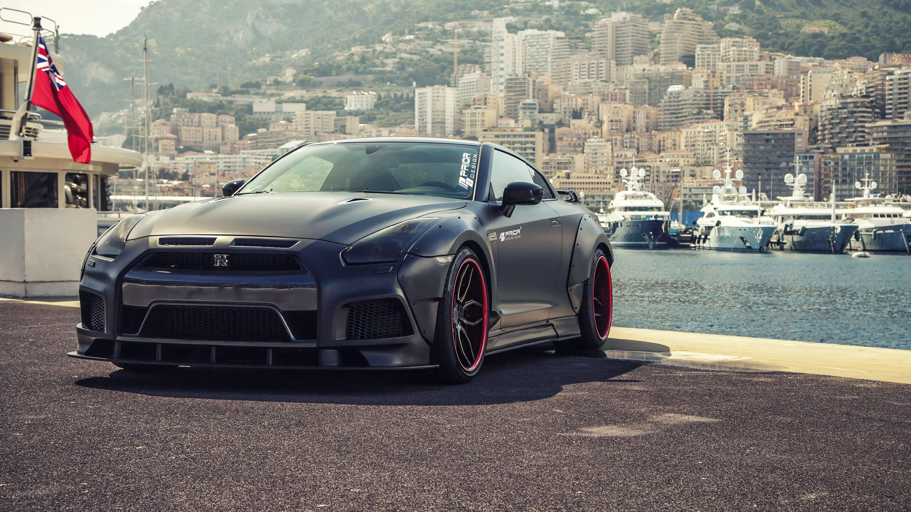

El Renacimiento del Nissan GTR
Historia, Innovación y Cultura de un Supercoche Legendario
Descubre cómo el Nissan GTR ha marcado una era en la industria automotriz, desde su diseño innovador hasta sus apariciones icónicas en videojuegos, películas y anime.
De las Calles de Japón al Escenario Mundial
El Nissan GTR comenzó como el Skyline GTR, un coche de carreras que evolucionó para convertirse en un supercoche icónico. Gracias al liderazgo de Carlos Ghosn, el GTR moderno alcanzó fama mundial.
Tecnología e Innovación
El Nissan GTR es conocido por sus características técnicas excepcionales: motor V6 biturbo, transmisión de doble embrague y tracción a las cuatro ruedas. Comparado con el Porsche 911 Turbo, el GTR ha logrado increíbles récords en Nürburgring.